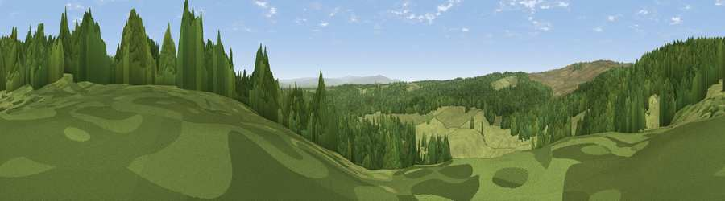

Viewpoint c11569_7280
#24274 in England · top 59% of its area beats it · — · open accessWhere it is
The exact computed spot (NY 64025 78475). Click the marker for map links.
Public access: this spot lies on mapped open-access land (CRoW Act 2000) — you may roam here on foot. Computed from Natural England's CRoW access layer and OpenStreetMap rights of way — not the legal definitive map. Always verify locally.
The view, rendered

A 360° render of this exact spot computed from the terrain model, tree cover and land cover — summer colours, afternoon light, calibrated against photographs of famous viewpoints. Real trees, hedges and buildings will differ in detail.
The panorama
Grey silhouette: terrain skyline in each direction (720 bearings, Earth curvature and refraction included). Dashed green: skyline with trees (+15 m) and buildings (+8 m) as obstacles. Blue strip: how far the ground is visible on each bearing.
Where the view opens
Wedge length = distance to the farthest visible ground on that bearing (vegetation-aware). Rings at 10, 25 and 50 km.
What fills the view
50% woodland · 50% grassland
Angular shares of the visible panorama (visual magnitude), not map area. Landscape diversity 0.30 (0–1 Shannon).
Key numbers
More beautiful places nearby
The staircase of upgrades: each row has a higher view potential than everything closer. Driving times are estimates from straight-line distance, calibrated against real road routing — check an actual route before setting out.
| Place | Direction | Drive | Score |
|---|---|---|---|
| Viewpoint c11587_7305 | NE · 2 km | ~4 min | 66.9 |
| Viewpoint c11634_7288 | N · 3 km | ~8 min | 71.8 |
| Sighty Crag | WNW · 5 km | ~10 min | 74.7 |
| Viewpoint near Bewcastle | W · 5 km | ~11 min | 76.6 |
| Viewpoint near Bewcastle | W · 5 km | ~12 min | 78.9 |
| Viewpoint c11644_7156 | WNW · 7 km | ~15 min | 80.8 |
| Viewpoint c11995_7247 | N · 21 km | ~36 min | 82.1 |
| Viewpoint near Hepple | ENE · 43 km | ~62 min | 82.4 |
55.09938, -2.56530 · source: screening · position refined by local search. Computed location — check access rights before visiting.